Homepage templates
Twelve directions with the same content. Open one to scroll it as a real page; each works on phones too.
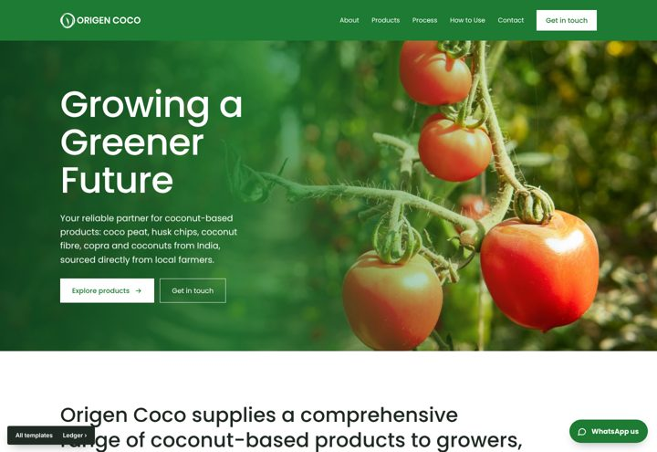
01 SourceYour Adobe XD homepage, rebuilt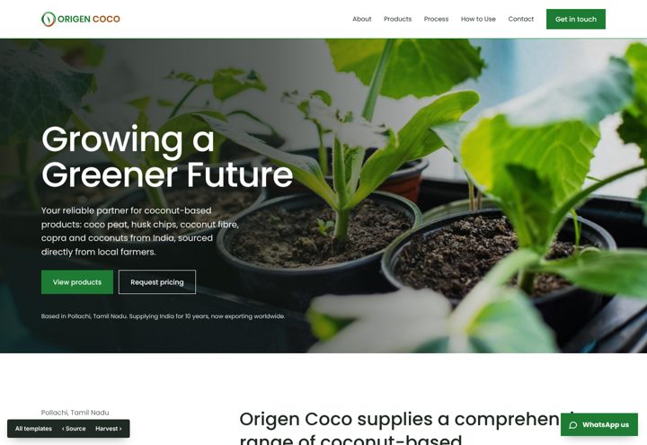
02 LedgerProducts as an indexed list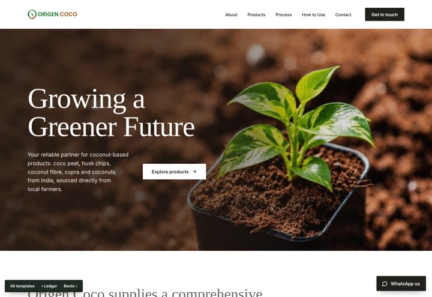
03 HarvestSerif headings, large photographs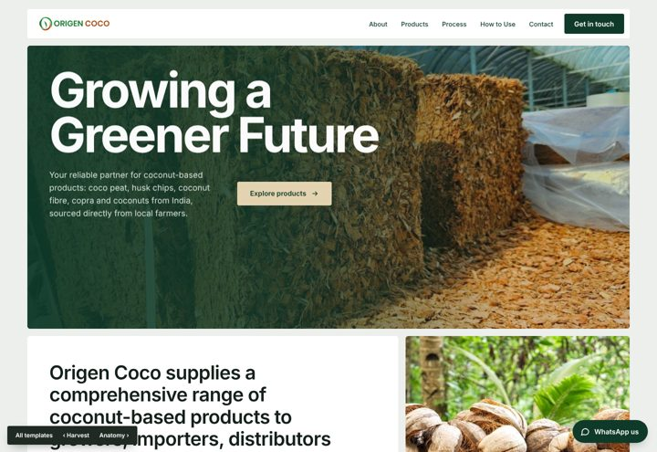
04 BentoContent in a grid of tiles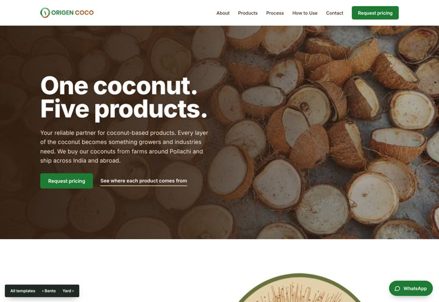
05 AnatomyA drawn coconut cross-section leads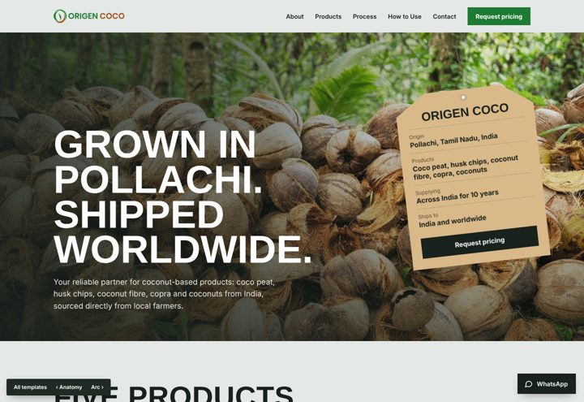
06 YardBold condensed type, a shipping tag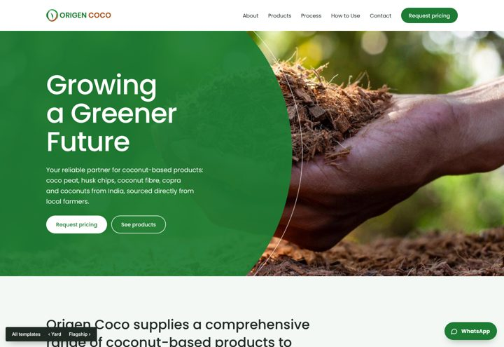
07 ArcCurved photo shapes, soft green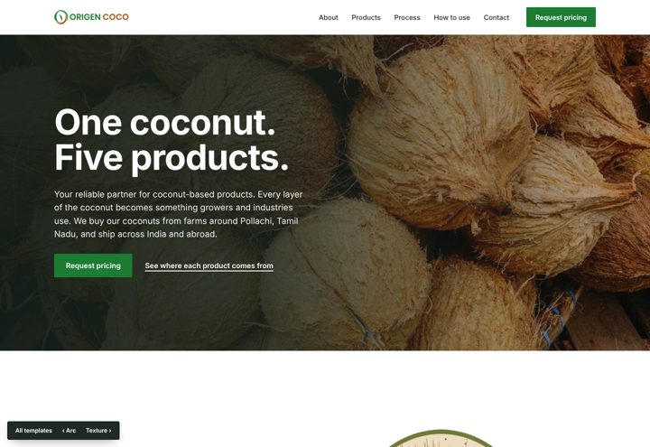
08 FlagshipThe final direction: one coconut, five products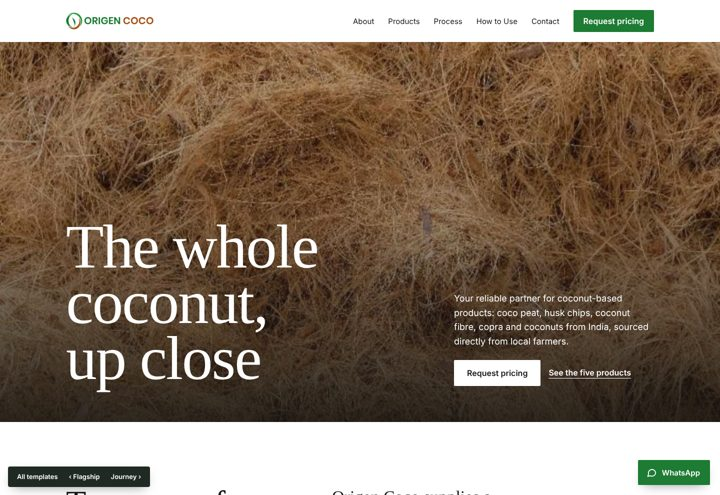
09 TextureClose-up material photography, a high-contrast serif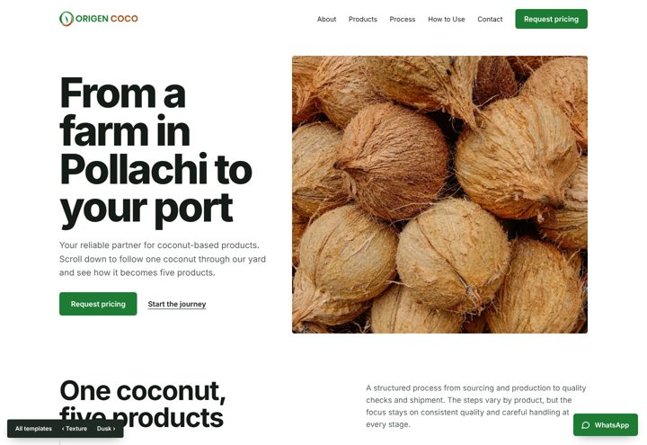
10 JourneyA farm-to-port story you scroll through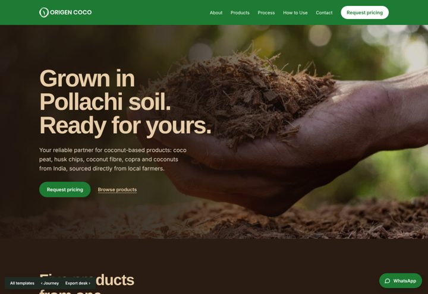
11 DuskDeep peat brown, wide husk-tan lettering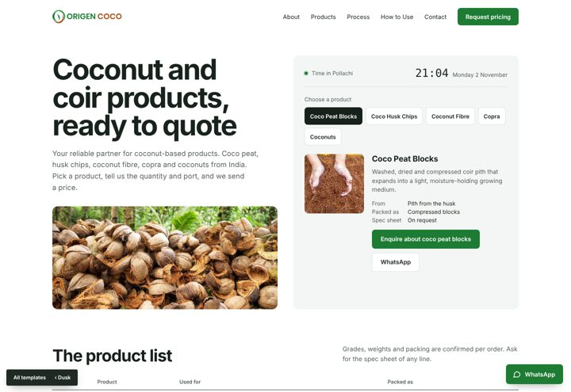
12 Export deskA trade desk for importers: live Pollachi time, product picker